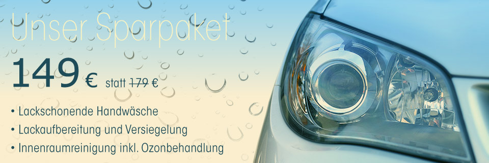
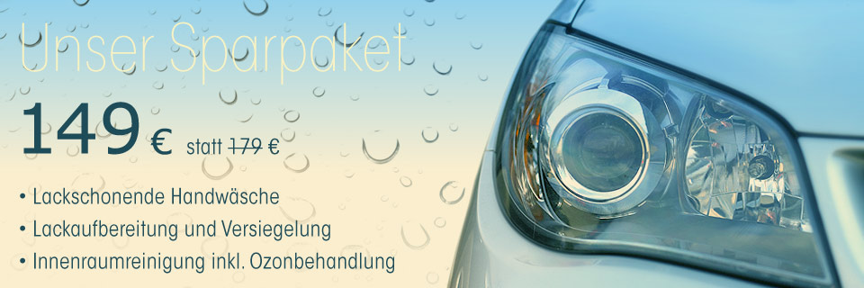

Über uns
Sie mögen, dass ihr Auto glänzt wie am ersten Tag?
Dann sind sie bei Autonormix in guten Händen.
Kosmetik und Pflege steigert den Wert und ist das A und O für jedes Fahrzeug. Bei uns können sie das Auto reinigen, pflegen und vor schlechten Witterungsbedingungen schützen lassen. Wir arbeiten mit Produkten von einszett, die Kompetenz in Reinigung und Pflege versprechen. Hochwertige Rohstoffe, sowie moderne und natürliche Pflegekomponenten garantieren einen überragenden Qualitätsstandard. Also nicht warten! Kommen sie und verwöhnen sie ihr Schätzchen. Schnelle, flexible und kompetente Aufbereitung nur bei Autonormix in Dissen.
D. Brodskiy
Addresse
Autohaus Rössel - Halddörfer Straße 20
34281 Gudensberg-Dissen
Telefon: 05 603 / 67 67
Mobil: +49 (0) 179 747 60 49
E-Mail: info@autonormix.de
Öffnungszeiten
Montag - Freitag: 08 - 18 Uhr Samstag 09 - 15 Uhr
Service und Preise
Unsere Preistabelle im PDF-Format